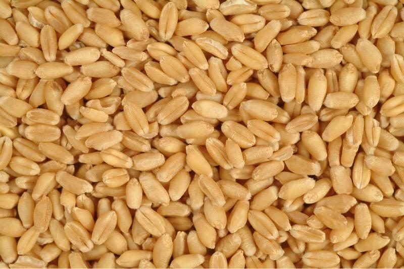
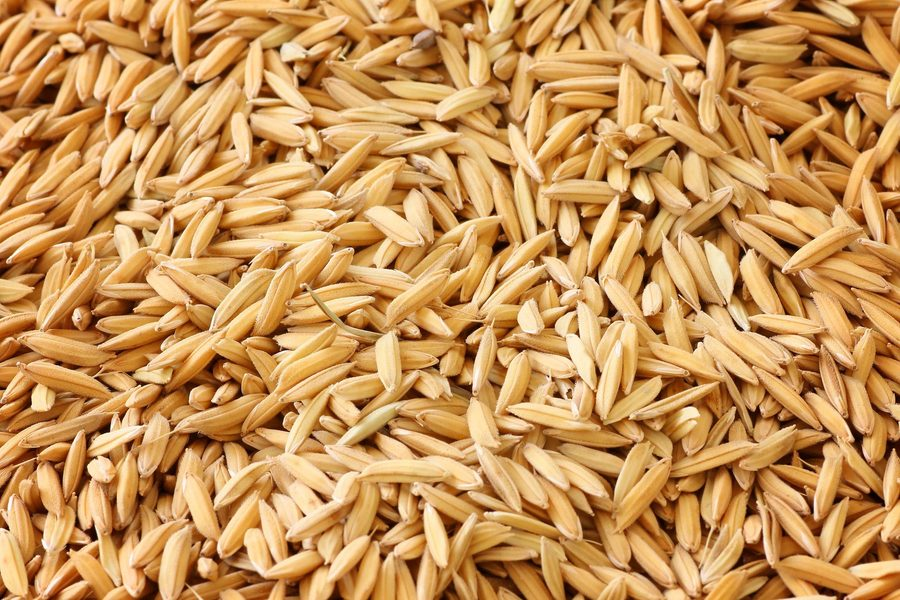
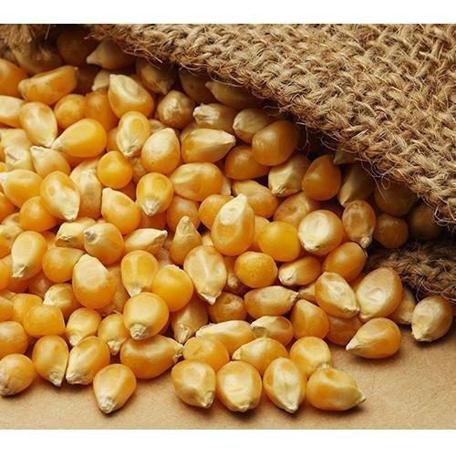
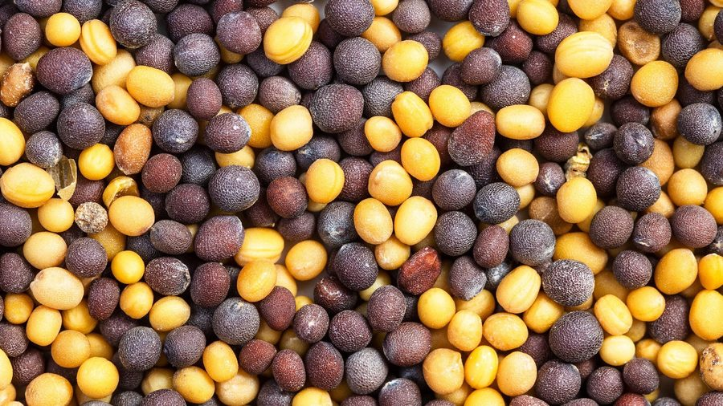
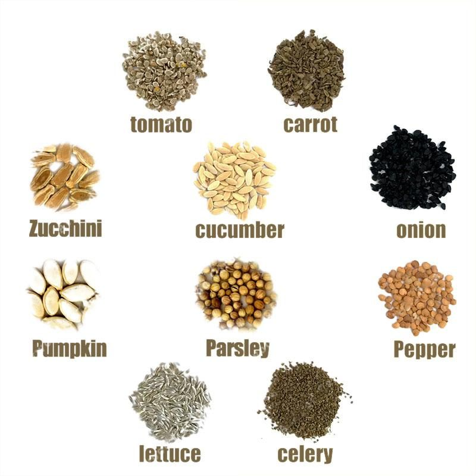
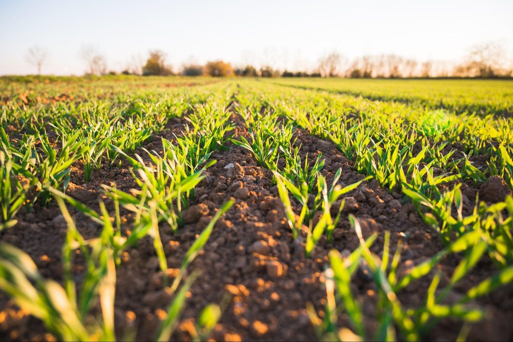
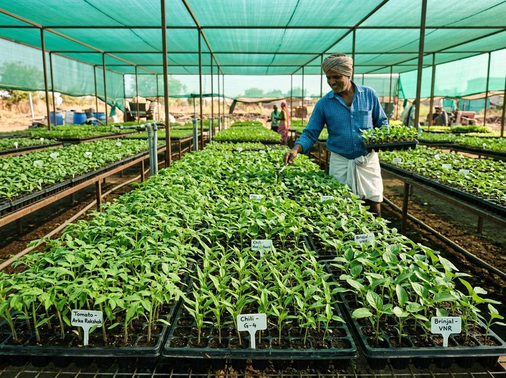
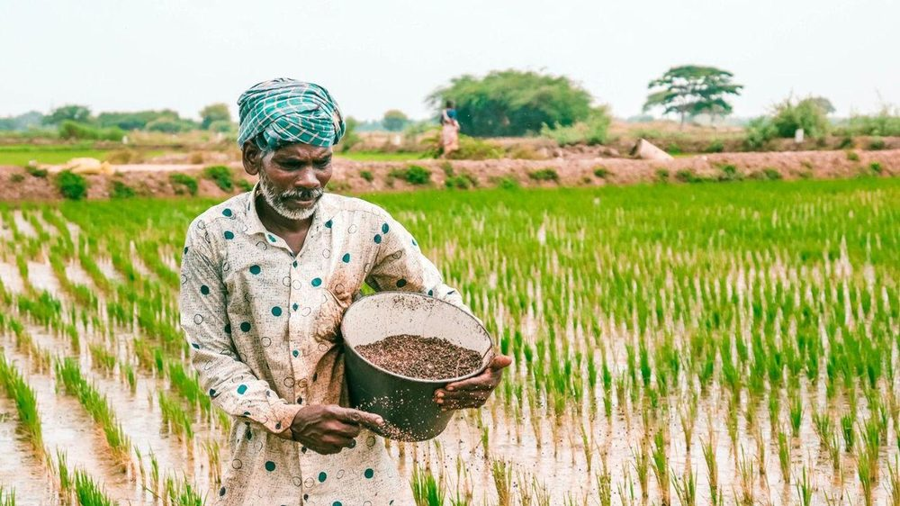

SEED SUPPLY
Quality Seeds for a Better Farming Future
Discover quality seeds, explore different crop varieties and learn how to choose the right seeds for better agricultural productivity.
Explore Seed VarietiesSeed Varieties
Explore Different Types of Seeds
Find the right seed for your crop, soil and season.

Wheat Seeds
Explore wheat seed varieties for different growing conditions.

Rice Seeds
Discover rice varieties suitable for different farming regions.

Maize Seeds
Learn about maize seed varieties and cultivation.

Oilseed Varieties
Explore mustard and other oilseed crop varieties.

Vegetable Seeds
Discover seeds for different vegetable crops.
Fodder Seeds
Explore fodder crops for livestock farming.

Importance
Why Quality Seeds Matter?
Healthy Growth
Support healthy crop establishment.
Better Crop Quality
Choose suitable seed varieties.
Seed Quality
Focus on certified and quality seeds.
Farm Productivity
Make informed seed selection decisions.

Seed Guide
How to Choose the Right Seeds?
Know Your Soil
Understand your soil type and condition.
Check Climate
Select seeds suitable for your region and season.
Choose Seed Variety
Consider crop duration and farming requirements.
Check Seed Quality
Verify germination, purity and certification details.
Storage & Care
Important Seed Storage Tips
- Store seeds in a cool and dry place.
- Protect seeds from moisture.
- Use clean and airtight containers where appropriate.
- Keep seeds away from pests.
- Follow the recommended storage instructions.

Start with the Right Seeds, Grow with Confidence
Make informed seed choices and build a healthier farming future.
Explore Seed Solutions